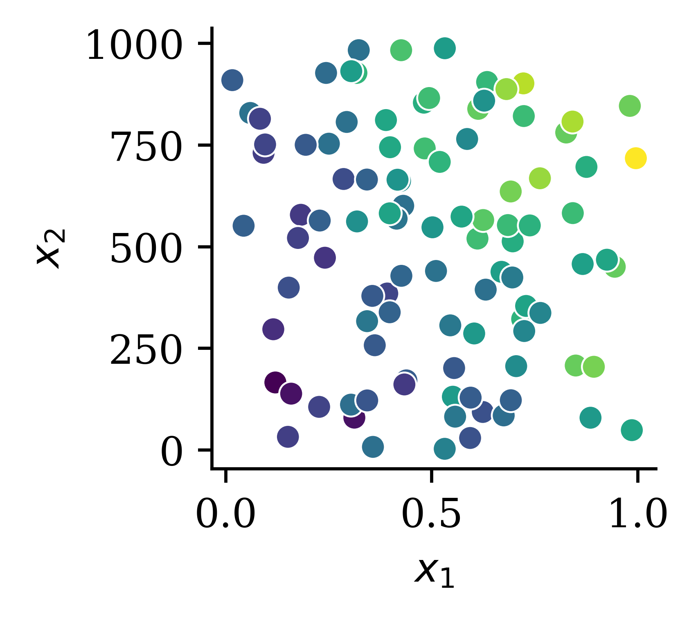

{kind=link}

Deep Learning with Keras
ACTL3143 & ACTL5111 Deep Learning for Actuaries
Lecture Outline
- Neural networks
- Regression demo with Keras
Deep Learning

How do real neurons work?
A neuron ‘firing’
An artificial neuron

One neuron
\[ \begin{aligned} z~=~&x_1 \times w_1 + \\ &x_2 \times w_2 + \\ &x_3 \times w_3 . \end{aligned} \]
\[ a = \begin{cases} z & \text{if } z > 0 \\ 0 & \text{if } z \leq 0 \end{cases} \]
Here, \(x_1\), \(x_2\), \(x_3\) is just some fixed data.
The weights \(w_1\), \(w_2\), \(w_3\) should be ‘learned’.
One neuron with bias
\[ \begin{aligned} z~=~&x_1 \times w_1 + \\ &x_2 \times w_2 + \\ &x_3 \times w_3 + b . \end{aligned} \]
\[ a = \begin{cases} z & \text{if } z > 0 \\ 0 & \text{if } z \leq 0 \end{cases} \]
The weights \(w_1\), \(w_2\), \(w_3\) and bias \(b\) should be ‘learned’.


A basic neural network

Step-function activation
Perceptrons
Brains and computers are binary, so make a perceptron with binary data. Seemed reasonable, impossible to train.
Modern neural network
Replace binary state with continuous state. Still rather slow to train.
Note
It’s a neural network made of neurons, not a “neuron network”.
Try different activation functions

Flexible
One can show that an MLP is a universal approximator, meaning it can model any suitably smooth function, given enough hidden units, to any desired level of accuracy (Hornik 1991). One can either make the model be “wide” or “deep”; the latter has some advantages…
Feature engineering


The deep learning hammer
Deep learning is not always the answer!

Quiz
In this ANN, how many of the following are there:
- features,
- targets,
- weights,
- biases, and
- parameters?
What is the depth?

California House Price Prediction
Import the data
from sklearn.datasets import fetch_california_housing
features, target = fetch_california_housing(
as_frame=True, return_X_y=True
)
features| MedInc | HouseAge | AveRooms | AveBedrms | Population | AveOccup | Latitude | Longitude | |
|---|---|---|---|---|---|---|---|---|
| 0 | 8.3252 | 41.0 | 6.984127 | 1.023810 | 322.0 | 2.555556 | 37.88 | -122.23 |
| 1 | 8.3014 | 21.0 | 6.238137 | 0.971880 | 2401.0 | 2.109842 | 37.86 | -122.22 |
| 2 | 7.2574 | 52.0 | 8.288136 | 1.073446 | 496.0 | 2.802260 | 37.85 | -122.24 |
| ... | ... | ... | ... | ... | ... | ... | ... | ... |
| 20637 | 1.7000 | 17.0 | 5.205543 | 1.120092 | 1007.0 | 2.325635 | 39.43 | -121.22 |
| 20638 | 1.8672 | 18.0 | 5.329513 | 1.171920 | 741.0 | 2.123209 | 39.43 | -121.32 |
| 20639 | 2.3886 | 16.0 | 5.254717 | 1.162264 | 1387.0 | 2.616981 | 39.37 | -121.24 |
20640 rows × 8 columns
What is the target?
target0 4.526
1 3.585
2 3.521
...
20637 0.923
20638 0.847
20639 0.894
Name: MedHouseVal, Length: 20640, dtype: float64The dataset
The target variable is the median house value for California districts, expressed in hundreds of thousands of dollars ($100,000).
This dataset was derived from the 1990 U.S. census, using one row per census block group. A block group is the smallest geographical unit for which the U.S. Census Bureau publishes sample data (a block group typically has a population of 600 to 3,000 people).
Columns
MedIncmedian income in block groupHouseAgemedian house age in block groupAveRoomsaverage number of rooms per householdAveBedrmsaverage # of bedrooms per householdPopulationblock group populationAveOccupaverage number of household membersLatitudeblock group latitudeLongitudeblock group longitude
An entire ML project

Questions to answer in ML project
You fit a few models to the training set, then ask:
- (Selection) Which of these models is the best?
- (Future Performance) How good should we expect the final model to be on unseen data?
Set aside a fraction for a test set
from sklearn.model_selection import train_test_split
X_train, X_test, y_train, y_test = train_test_split(
features, target, random_state=42
)
Note: Compare X_/y_ names, capitals & lowercase.

Basic ML workflow

- For each model, fit it to the training set.
- Compute the error for each model on the validation set.
- Select the model with the lowest validation error.
- Compute the error of the final model on the test set.
{kind=link}
Split three ways
# Thanks https://datascience.stackexchange.com/a/15136
X_main, X_test, y_main, y_test = train_test_split(
features, target, test_size=0.2, random_state=1
)
# As 0.25 x 0.8 = 0.2
X_train, X_val, y_train, y_val = train_test_split(
X_main, y_main, test_size=0.25, random_state=1
)
X_train.shape, X_val.shape, X_test.shape((12384, 8), (4128, 8), (4128, 8))Why not use test set for both?
Thought experiment: have \(m\) classifiers: \(f_1(\mathbf{x})\), \(\dots\), \(f_m(\mathbf{x})\).
They are just as good as each other in the long run \[ \mathbb{P}(\, f_i(\mathbf{X}) = Y \,)\ =\ 90\% , \quad \text{for } i=1,\dots,m . \]
Evaluate each model on the test set, some will be better than others.
/var/folders/y8/280cg1rd61jfcgvnkj769f7m0000gr/T/ipykernel_8648/4029235944.py:7: UserWarning:
`distplot` is a deprecated function and will be removed in seaborn v0.14.0.
Please adapt your code to use either `displot` (a figure-level function with
similar flexibility) or `histplot` (an axes-level function for histograms).
For a guide to updating your code to use the new functions, please see
https://gist.github.com/mwaskom/de44147ed2974457ad6372750bbe5751
seaborn.distplot(x)
Take the best, you’d think it has \(\approx 98\%\) accuracy!
EDA & Baseline Model
The training set
X_train| MedInc | HouseAge | AveRooms | AveBedrms | Population | AveOccup | Latitude | Longitude | |
|---|---|---|---|---|---|---|---|---|
| 9107 | 4.1573 | 19.0 | 6.162630 | 1.048443 | 1677.0 | 2.901384 | 34.63 | -118.18 |
| 13999 | 0.4999 | 10.0 | 6.740000 | 2.040000 | 108.0 | 2.160000 | 34.69 | -116.90 |
| 5610 | 2.0458 | 27.0 | 3.619048 | 1.062771 | 1723.0 | 3.729437 | 33.78 | -118.26 |
| ... | ... | ... | ... | ... | ... | ... | ... | ... |
| 8539 | 4.0727 | 18.0 | 3.957845 | 1.079625 | 2276.0 | 2.665105 | 33.90 | -118.36 |
| 2155 | 2.3190 | 41.0 | 5.366265 | 1.113253 | 1129.0 | 2.720482 | 36.78 | -119.79 |
| 13351 | 5.5632 | 9.0 | 7.241087 | 0.996604 | 2280.0 | 3.870968 | 34.02 | -117.62 |
12384 rows × 8 columns
Location
Python’s matplotlib package \(\approx\) R’s basic plots.
import matplotlib.pyplot as plt
plt.scatter(features["Longitude"], features["Latitude"])
Location #2
Python’s seaborn package \(\approx\) R’s ggplot2.
import seaborn as sns
sns.scatterplot(x="Longitude", y="Latitude", data=features);
Features
print(list(features.columns))['MedInc', 'HouseAge', 'AveRooms', 'AveBedrms', 'Population', 'AveOccup', 'Latitude', 'Longitude']How many?
num_features = len(features.columns)
num_features8Or
num_features = features.shape[1]
features.shape(20640, 8)Linear Regression
\[ \hat{y} = w_0 + \sum_{i=1}^N w_i x_i .\]
from sklearn.linear_model import LinearRegression
lr = LinearRegression()
lr.fit(X_train, y_train);The \(w_0\) is in lr.intercept_ and the others are in
print(lr.coef_)[ 4.34267965e-01 9.88284781e-03 -9.39592954e-02 5.86373944e-01
-1.58360948e-06 -3.59968968e-03 -4.26013498e-01 -4.41779336e-01]Make some predictions
X_train.head(3)| MedInc | HouseAge | AveRooms | AveBedrms | Population | AveOccup | Latitude | Longitude | |
|---|---|---|---|---|---|---|---|---|
| 9107 | 4.1573 | 19.0 | 6.162630 | 1.048443 | 1677.0 | 2.901384 | 34.63 | -118.18 |
| 13999 | 0.4999 | 10.0 | 6.740000 | 2.040000 | 108.0 | 2.160000 | 34.69 | -116.90 |
| 5610 | 2.0458 | 27.0 | 3.619048 | 1.062771 | 1723.0 | 3.729437 | 33.78 | -118.26 |
y_pred = lr.predict(X_train.head(3))
y_predarray([1.81699287, 0.0810446 , 1.62089363])prediction = lr.intercept_
for w_i, x_i in zip(lr.coef_, X_train.iloc[0]):
prediction += w_i * x_i
prediction1.8169928680677856Plot the predictions


Calculate mean squared error
import pandas as pd
y_pred = lr.predict(X_train)
df = pd.DataFrame({"Predictions": y_pred, "True values": y_train})
df["Squared Error"] = (df["Predictions"] - df["True values"]) ** 2
df.head(4)| Predictions | True values | Squared Error | |
|---|---|---|---|
| 9107 | 1.816993 | 2.281 | 0.215303 |
| 13999 | 0.081045 | 0.550 | 0.219919 |
| 5610 | 1.620894 | 1.745 | 0.015402 |
| 13533 | 1.168949 | 1.199 | 0.000903 |
df["Squared Error"].mean()0.5291948207479794Using mean_squared_error
df["Squared Error"].mean()0.5291948207479794from sklearn.metrics import mean_squared_error as mse
mse(y_train, y_pred)0.5291948207479794Store the results in a dictionary:
mse_lr_train = mse(y_train, lr.predict(X_train))
mse_lr_val = mse(y_val, lr.predict(X_val))
mse_train = {"Linear Regression": mse_lr_train}
mse_val = {"Linear Regression": mse_lr_val}Our First Neural Network
What are Keras and TensorFlow?
Keras is common way of specifying, training, and using neural networks. It gives a simple interface to various backend libraries, including Tensorflow.

Create a Keras ANN model
Decide on the architecture: a simple fully-connected network with one hidden layer with 30 neurons.
Create the model:
from tensorflow.keras.models import Sequential
from tensorflow.keras.layers import Dense
model = Sequential(
[Dense(30, input_dim=num_features, activation="relu"), Dense(1)]
)Inspect the model
model.summary()Model: "sequential"
_________________________________________________________________
Layer (type) Output Shape Param #
=================================================================
dense (Dense) (None, 30) 270
dense_1 (Dense) (None, 1) 31
=================================================================
Total params: 301
Trainable params: 301
Non-trainable params: 0
_________________________________________________________________The model is initialised randomly
model = Sequential([Dense(30, activation="relu"), Dense(1)])
model.predict(X_val.head(3), verbose=0)2024-01-27 21:57:36.610449: W tensorflow/tsl/platform/profile_utils/cpu_utils.cc:128] Failed to get CPU frequency: 0 Hzarray([[784.08624 ],
[472.15054 ],
[ 24.851902]], dtype=float32)model = Sequential([Dense(30, activation="relu"), Dense(1)])
model.predict(X_val.head(3), verbose=0)array([[-204.36739 ],
[-116.87286 ],
[ 52.309578]], dtype=float32)Controlling the randomness
import random
random.seed(123)
model = Sequential([Dense(30, activation="relu"), Dense(1)])
display(model.predict(X_val.head(3), verbose=0))
random.seed(123)
model = Sequential([Dense(30, activation="relu"), Dense(1)])
display(model.predict(X_val.head(3), verbose=0))array([[ 1.3685111e+03],
[ 8.3660364e+02],
[-3.9363861e-02]], dtype=float32)array([[ 1.3685111e+03],
[ 8.3660364e+02],
[-3.9363861e-02]], dtype=float32)Fit the model
random.seed(123)
model = Sequential([
Dense(30, activation="relu"),
Dense(1)
])
model.compile("adam", "mse")
%time hist = model.fit(X_train, y_train, epochs=5, verbose=False)
hist.history["loss"]CPU times: user 803 ms, sys: 92.5 ms, total: 896 ms
Wall time: 707 ms[25089.306640625,
12.87351131439209,
13.523902893066406,
8.264267921447754,
6.323684215545654]Make predictions
y_pred = model.predict(X_train[:3], verbose=0)
y_predarray([[ 0.73277044],
[-2.3223577 ],
[ 0.45614386]], dtype=float32)
Note
The .predict gives us a ‘matrix’ not a ‘vector’. Calling .flatten() will convert it to a ‘vector’.
print(f"Original shape: {y_pred.shape}")
y_pred = y_pred.flatten()
print(f"Flattened shape: {y_pred.shape}")
y_predOriginal shape: (3, 1)
Flattened shape: (3,)array([ 0.73277044, -2.3223577 , 0.45614386], dtype=float32)Plot the predictions


Assess the model
y_pred = model.predict(X_val, verbose=0)
mse(y_val, y_pred)4.17411691155815mse_train["Basic ANN"] = mse(
y_train, model.predict(X_train, verbose=0)
)
mse_val["Basic ANN"] = mse(y_val, model.predict(X_val, verbose=0))Some predictions are negative:
y_pred = model.predict(X_val, verbose=0)
y_pred.min(), y_pred.max()(-17.046877, 24.142027)y_val.min(), y_val.max()(0.225, 5.00001)Force positive predictions
Try running for longer
random.seed(123)
model = Sequential([
Dense(30, activation="relu"),
Dense(1)
])
model.compile("adam", "mse")
%time hist = model.fit(X_train, y_train, \
epochs=50, verbose=False)CPU times: user 6.61 s, sys: 803 ms, total: 7.41 s
Wall time: 5.65 sLoss curve
plt.plot(range(1, 51), hist.history["loss"])
plt.xlabel("Epoch")
plt.ylabel("MSE");
Loss curve
plt.plot(range(2, 51), hist.history["loss"][1:])
plt.xlabel("Epoch")
plt.ylabel("MSE");
Predictions
y_pred = model.predict(X_val, verbose=0)
print(f"Min prediction: {y_pred.min():.2f}")
print(f"Max prediction: {y_pred.max():.2f}")Min prediction: -4.34
Max prediction: 7.70plt.scatter(y_pred, y_val)
plt.xlabel("Predictions")
plt.ylabel("True values")
add_diagonal_line()mse_train["Long run ANN"] = mse(
y_train, model.predict(X_train, verbose=0)
)
mse_val["Long run ANN"] = mse(y_val, model.predict(X_val, verbose=0))
Try different activation functions

Enforce positive outputs (ReLU)
random.seed(123)
model = Sequential([
Dense(30, activation="relu"),
Dense(1, activation="relu")
])
model.compile("adam", "mse")
%time hist = model.fit(X_train, y_train, epochs=50, \
verbose=False)
import numpy as np
losses = np.round(hist.history["loss"], 2)
print(losses[:5], "...", losses[-5:])CPU times: user 6.7 s, sys: 765 ms, total: 7.47 s
Wall time: 5.77 s
[2.448591e+04 5.640000e+00 5.640000e+00 5.640000e+00 5.640000e+00] ... [5.64 5.64 5.64 5.64 5.64]Plot the predictions


Enforce positive outputs (\(\mathrm{e}^{\,x}\))
random.seed(123)
model = Sequential([
Dense(30, activation="relu"),
Dense(1, activation="exponential")
])
model.compile("adam", "mse")
%time hist = model.fit(X_train, y_train, epochs=5, verbose=False)
losses = hist.history["loss"]
print(losses)CPU times: user 901 ms, sys: 93 ms, total: 994 ms
Wall time: 675 ms
[nan, nan, nan, nan, nan]Preprocessing
Re-scaling the inputs
from sklearn.preprocessing import StandardScaler, MinMaxScaler
scaler = StandardScaler()
scaler.fit(X_train)
X_train_sc = scaler.transform(X_train)
X_val_sc = scaler.transform(X_val)
X_test_sc = scaler.transform(X_test)plt.hist(X_train.iloc[:, 0])
plt.hist(X_train_sc[:, 0])
plt.legend(["Original", "Scaled"]);
Same model with scaled inputs
Loss curve
plt.plot(range(1, 51), hist.history["loss"])
plt.xlabel("Epoch")
plt.ylabel("MSE");
Loss curve
plt.plot(range(2, 51), hist.history["loss"][1:])
plt.xlabel("Epoch")
plt.ylabel("MSE");
Predictions
y_pred = model.predict(X_val_sc, verbose=0)
print(f"Min prediction: {y_pred.min():.2f}")
print(f"Max prediction: {y_pred.max():.2f}")Min prediction: 0.00
Max prediction: 15.64plt.scatter(y_pred, y_val)
plt.xlabel("Predictions")
plt.ylabel("True values")
add_diagonal_line()mse_train["Exp ANN"] = mse(
y_train, model.predict(X_train_sc, verbose=0)
)
mse_val["Exp ANN"] = mse(y_val, model.predict(X_val_sc, verbose=0))
Comparing MSE (smaller is better)
On training data:
mse_train{'Linear Regression': 0.5291948207479794,
'Basic ANN': 4.356800566789334,
'Long run ANN': 0.6214112727419555,
'Exp ANN': 0.32706106224466674}On validation data (expect worse, i.e. bigger):
mse_val{'Linear Regression': 0.505942020538137,
'Basic ANN': 4.17411691155815,
'Long run ANN': 0.6196187771043107,
'Exp ANN': 0.3546534768267938}Comparing models (train)
train_results = pd.DataFrame(
{"Model": mse_train.keys(), "MSE": mse_train.values()}
)
train_results.sort_values("MSE", ascending=False)| Model | MSE | |
|---|---|---|
| 1 | Basic ANN | 4.356801 |
| 2 | Long run ANN | 0.621411 |
| 0 | Linear Regression | 0.529195 |
| 3 | Exp ANN | 0.327061 |
Comparing models (validation)
val_results = pd.DataFrame(
{"Model": mse_val.keys(), "MSE": mse_val.values()}
)
val_results.sort_values("MSE", ascending=False)| Model | MSE | |
|---|---|---|
| 1 | Basic ANN | 4.174117 |
| 2 | Long run ANN | 0.619619 |
| 0 | Linear Regression | 0.505942 |
| 3 | Exp ANN | 0.354653 |
Early Stopping
Choosing when to stop training

Try early stopping
Hinton calls it a “beautiful free lunch”
from tensorflow.keras.callbacks import EarlyStopping
random.seed(123)
model = Sequential([
Dense(30, activation="relu"),
Dense(1, activation="exponential")
])
model.compile("adam", "mse")
es = EarlyStopping(restore_best_weights=True, patience=15)
%time hist = model.fit(X_train_sc, y_train, epochs=1_000, \
callbacks=[es], validation_data=(X_val_sc, y_val), verbose=False)
print(f"Keeping model at epoch #{len(hist.history['loss'])-10}.")CPU times: user 13.2 s, sys: 1.57 s, total: 14.7 s
Wall time: 11.2 s
Keeping model at epoch #63.Loss curve
plt.plot(hist.history["loss"])
plt.plot(hist.history["val_loss"])
plt.legend(["Training", "Validation"]);
Loss curve II
plt.plot(hist.history["loss"])
plt.plot(hist.history["val_loss"])
plt.ylim([0, 8])
plt.legend(["Training", "Validation"]);
Predictions


Comparing models (validation)
| Model | MSE | |
|---|---|---|
| 1 | Basic ANN | 4.174117 |
| 2 | Long run ANN | 0.619619 |
| 0 | Linear Regression | 0.505942 |
| 3 | Exp ANN | 0.354653 |
| 4 | Early stop ANN | 0.326440 |
The test set
Evaluate only the final/selected model on the test set.
mse(y_test, model.predict(X_test_sc, verbose=0))0.33677382461309996model.evaluate(X_test_sc, y_test, verbose=False)0.3367737829685211Another useful callback
from pathlib import Path
from tensorflow.keras.callbacks import ModelCheckpoint
random.seed(123)
model = Sequential(
[Dense(30, activation="relu"), Dense(1, activation="exponential")]
)
model.compile("adam", "mse")
mc = ModelCheckpoint(
"best-model.h5", monitor="val_loss", save_best_only=True
)
es = EarlyStopping(restore_best_weights=True, patience=5)
hist = model.fit(
X_train_sc,
y_train,
epochs=100,
validation_split=0.1,
callbacks=[mc, es],
verbose=False,
)
Path("best-model.h5").stat().st_size28248Quiz
Critique this 💩 regression code
X_train = features[:80]; X_test = features[81:]
y_train = targets[:80]; y_test = targets[81:]model = Sequential([
Dense(32, activation='ReLU', input_dim=2),
Dense(32, activation='ReLU', input_dim=2),
Dense(1, activation='sigmoid')
])
model.compile(optimizer="adam", loss='mse')
es = EarlyStopping(patience=10)
fitted_model = model.fit(X_train, y_train, epochs=5,
callbacks=[es], verbose=False)trainMAE = model.evaluate(X_train, y_train, verbose=False)
hist = model.fit(X_test, y_test, epochs=5,
callbacks=[es], verbose=False)
hist.history["loss"]
testMAE = model.evaluate(X_test, y_test, verbose=False)f"Train MAE: {testMAE:.2f} Test MAE: {trainMAE:.2f}"'Train MAE: 4.82 Test MAE: 4.32'The data
sns.scatterplot(
x="$x_1$", y="$x_2$",
c=targets, data=features);
sns.distplot(targets);/var/folders/y8/280cg1rd61jfcgvnkj769f7m0000gr/T/ipykernel_8648/299933739.py:1: UserWarning:
`distplot` is a deprecated function and will be removed in seaborn v0.14.0.
Please adapt your code to use either `displot` (a figure-level function with
similar flexibility) or `histplot` (an axes-level function for histograms).
For a guide to updating your code to use the new functions, please see
https://gist.github.com/mwaskom/de44147ed2974457ad6372750bbe5751
sns.distplot(targets);
With warnings enabled
model.fit(X_train, y_train, epochs=5,
callbacks=[es], verbose=False);WARNING:tensorflow:Early stopping conditioned on metric `val_loss` which is not available. Available metrics are: loss
WARNING:tensorflow:Early stopping conditioned on metric `val_loss` which is not available. Available metrics are: loss
WARNING:tensorflow:Early stopping conditioned on metric `val_loss` which is not available. Available metrics are: loss
WARNING:tensorflow:Early stopping conditioned on metric `val_loss` which is not available. Available metrics are: loss
WARNING:tensorflow:Early stopping conditioned on metric `val_loss` which is not available. Available metrics are: losses = EarlyStopping(restore_best_weights=True, patience=10)
model.fit(X_train, y_train, epochs=5, validation_split=0.1,
callbacks=[es], verbose=False);Later input_dim ignored
model = Sequential([
Dense(32, activation='ReLU', input_dim=2),
Dense(32, activation='ReLU', input_dim=2),
Dense(1, activation='ReLU')
])
model.compile(optimizer='adam', loss='mse')
model.summary(print_fn=skip_empty)Model: "sequential_13"
_________________________________________________________________
Layer (type) Output Shape Param #
=================================================================
dense_27 (Dense) (None, 32) 96
dense_28 (Dense) (None, 32) 1056
dense_29 (Dense) (None, 1) 33
=================================================================
Total params: 1,185
Trainable params: 1,185
Non-trainable params: 0
_________________________________________________________________Later input_dim ignored
model = Sequential([
Dense(32, activation='ReLU', input_dim=2),
Dense(32, activation='ReLU'),
Dense(1, activation='ReLU')
])
model.compile(optimizer='adam', loss='mse')
model.summary(print_fn=skip_empty)Model: "sequential_14"
_________________________________________________________________
Layer (type) Output Shape Param #
=================================================================
dense_30 (Dense) (None, 32) 96
dense_31 (Dense) (None, 32) 1056
dense_32 (Dense) (None, 1) 33
=================================================================
Total params: 1,185
Trainable params: 1,185
Non-trainable params: 0
_________________________________________________________________Later input_dim ignored
model = Sequential([
Dense(32, activation='ReLU'),
Dense(32, activation='ReLU'),
Dense(1, activation='ReLU')
])
model.compile(optimizer='adam', loss='mse')
model.fit(X_train, y_train, epochs=5, verbose=False)
model.summary(print_fn=skip_empty)Model: "sequential_15"
_________________________________________________________________
Layer (type) Output Shape Param #
=================================================================
dense_33 (Dense) (None, 32) 96
dense_34 (Dense) (None, 32) 1056
dense_35 (Dense) (None, 1) 33
=================================================================
Total params: 1,185
Trainable params: 1,185
Non-trainable params: 0
_________________________________________________________________Glossary
- activations, activation function
- artificial neural network
- biases (in neurons)
- callbacks
- classification problem
- cost/loss function
- deep network, network depth
- dense or fully-connected layer
- early stopping
- epoch
- feed-forward neural network
- Keras, Tensorflow, PyTorch
- labelled/unlabelled data
- machine learning
- matplotlib, seaborn
- neural network architecture
- perceptron
- ReLU
- representation learning
- sigmoid activation function
- targets
- training/test split
- weights (in a neuron)
- validation set